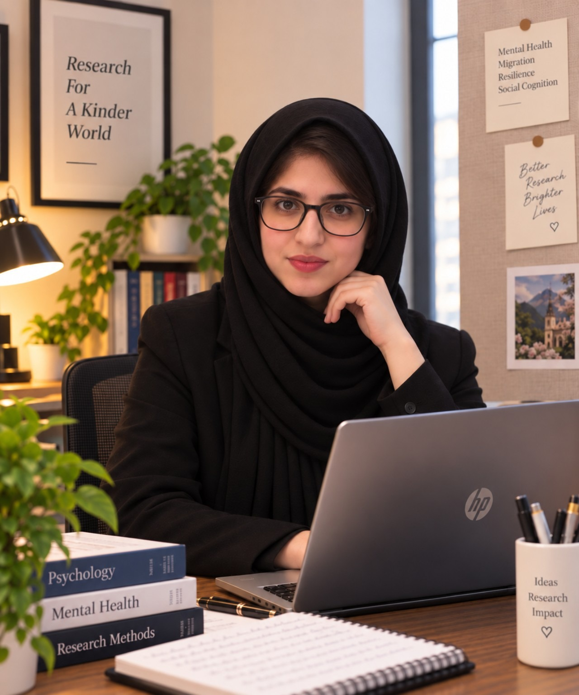

01
Mental Health & Resilience
Psychological distress, resilience, adaptation, trauma and wellbeing across vulnerable and displaced populations.
I work across psychological research, clinical practice, psychometrics and evidence communication — with a particular interest in mental health, resilience, neurodevelopment and the social contexts in which people live.

My work brings together psychological science, field experience and clear communication — from community research to clinical settings and interdisciplinary evidence work.
“Good research does not lose sight of the people behind the data.”
I am a psychology researcher and clinical practitioner with experience spanning mental health, psychometrics, neurodevelopmental populations, community-based work and evidence synthesis.
My research interests include mental health and resilience, displacement and adaptation, motivation, executive functioning, affective regulation, social cognition and psychological measurement. I am especially interested in research that is methodologically rigorous while remaining connected to lived experience.
My MPhil research examined mental health problems, post-migration living difficulties and resilience among Afghan refugees, combining psychological measurement with field-based research.
A selective view of the themes and methods that shape my research and professional practice.
Psychological distress, resilience, adaptation, trauma and wellbeing across vulnerable and displaced populations.
Executive functioning, task initiation, motivation and developmental vulnerability in clinical and research contexts.
Scale development, translation, validity, reliability and culturally responsive psychological measurement.
Evidence synthesis, research briefs, analytical reporting and translating complex findings for varied audiences.
Psychological assessment and trauma-informed, CBT-, DBT- and person-centred approaches across clinical settings.
Mixed-methods research grounded in lived experience, displacement, social context and adaptation.
My research moves between psychological measurement and the social realities that give those measurements meaning.
My MPhil research focused on mental health problems, post-migration living difficulties and resilience among Afghan refugees, with a strong emphasis on culturally appropriate psychological measurement.
Alongside refugee mental health, my broader research interests examine how motivation, executive functioning, affective regulation and social cognition interact with developmental and neurological contexts.
My MPhil research connected psychological measurement with direct engagement in Afghan refugee communities. These photographs document the fieldwork behind the research — conversations, household settings and the practical work of listening.


Research methods I use to build, test and communicate psychological evidence.
SEM, EFA/CFA, mediation & moderation, growth curve modelling, measurement invariance.
Reflexive thematic analysis, cognitive interviewing, field notes and reflexive journaling.
Scale development, translation, content and construct validity, reliability and cultural adaptation.
SPSS, AMOS, STATA, Mplus and R, including lavaan and semTools; NVivo for qualitative analysis.
Selected manuscripts and research projects represented accurately by their current status.
Rasheed, S. & Maqsood, A.
Rasheed, S. & Maqsood, A.
Rasheed, S.
Selected roles showing how my work has developed across clinical, community and interdisciplinary research settings.
Interdisciplinary research, evidence synthesis, behavioral science, health psychology, public communication and analytical briefs for senior stakeholders.
Trauma-informed psychosocial support and community rehabilitation work with displaced ex-servicemen, widows and dependents.
Psychometric research involving resilience, depression, anxiety, coping and behavioral constructs, including survey tools and data analysis.
Assessment and individualized therapeutic work with children and adults with ASD, ADHD and Down syndrome, alongside multidisciplinary developmental case records.
Psychological assessment, psychometric testing and clinical reporting across child and adult presentations.
A concise academic profile for collaborators, research groups and prospective PhD supervisors.
A visual record of community-based fieldwork connected to my research on mental health, displacement and resilience.
Selected public-facing writing on forced migration, developmental vulnerability, rehabilitation and related psychological themes.
12+ opinion and feature contributions across Dawn, The Express Tribune, The Nation and Hilal Magazine, translating psychological and social issues for broader audiences.
Enquire about writing →A future space for reflections on psychological research, measurement, fieldwork, behavioral science and the realities behind the evidence.
Suggest a topic →For research collaboration, academic opportunities, evidence and writing projects, professional enquiries or other relevant conversations, I would be glad to hear from you.
shehlarasheed66@gmail.com